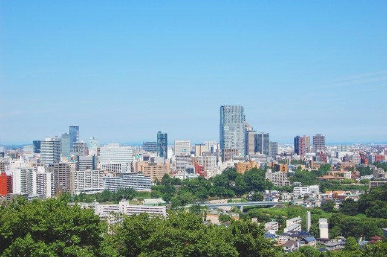
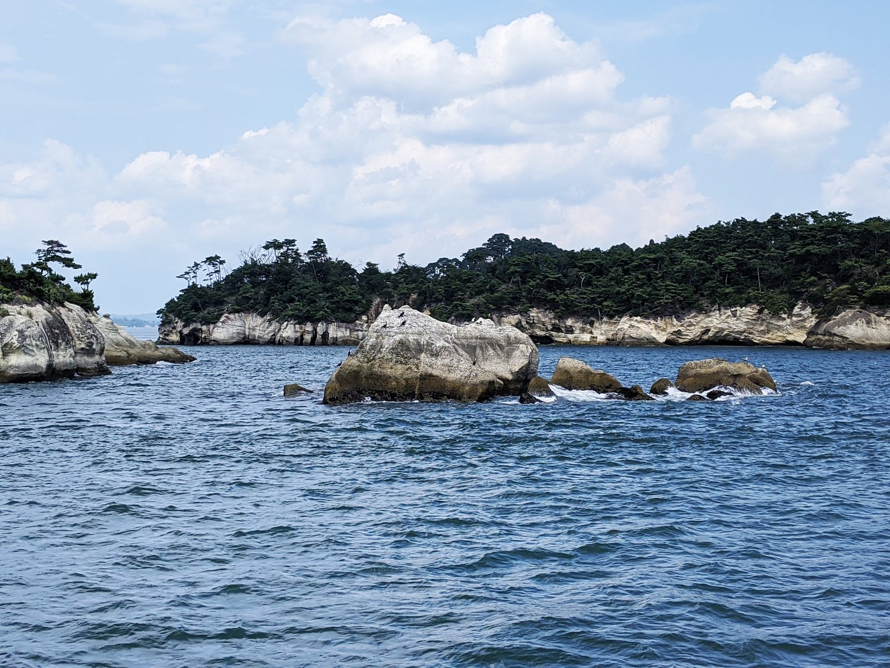

仙台伊澤家 勝山酒造
仙台市泉区勝山戦勝政宗
仙台藩の御酒御用蔵の流れをくむ蔵で、県内で初めての純米蔵になりました。透明感のある旨みと、料理に寄り添う味わいを目指しています。純米吟醸「献」は2019年にIWCの日本酒部門で最高賞を受けました。
- 創業
- 元禄年間(1688年ごろ)
- 見学
- 見学不可 見学不可
宮城県酒造組合に加盟する24の蔵元を、地域ごとに紹介します。それぞれの代表銘柄と、蔵の歩み、見学の受け入れ状況をまとめました。
見学の受け入れや時期は変わることがあります。訪問前に必ず各蔵へ問い合わせてください。蔵の情報は宮城県酒造組合の蔵元紹介をもとに、2026年10月に確認しました。
3蔵

仙台藩の御酒御用蔵の流れをくむ蔵で、県内で初めての純米蔵になりました。透明感のある旨みと、料理に寄り添う味わいを目指しています。純米吟醸「献」は2019年にIWCの日本酒部門で最高賞を受けました。
360年以上続く県内最古の酒蔵です。宮城の酒米「吟のいろは」「蔵の華」を使った酒で受賞を重ね、ふだんの食事に合う、ほっとできる酒を目指しています。
山形県高畠町で創業した蔵が、1996年に大和町へ移りました。吟醸用の麹は手作業で造り、日本酒度+20の「雪の松島 超辛」が人気です。
3蔵
東日本大震災の津波で蔵が流されましたが、仮設の蔵で酒造りを続け、2019年に創業の地・閖上で蔵を再建しました。「宮城、閖上に寄り添う酒造り」を掲げています。
紅花商で栄えた蔵の町・村田の蔵です。宮城の米ササニシキにこだわり、やさしい旨みとキレのよさが持ち味。12月には新米で仕込む「うすにごり」も出ます。
白石市で唯一の酒蔵です。敷地の地下50mから汲み上げる伏流水で、旨口でキレのよい酒を造ります。若い蔵人を中心に、生酛造りなど新しい挑戦も続けています。
2蔵

鹽竈神社の門前町に江戸末期から明治初期の蔵が残ります。戦後に登場した淡麗辛口の「浦霞 禅」は、吟醸酒・地酒ブームの先駆けとなりました。
鹽竈神社の御神酒御用蔵として始まった、300年を超える蔵です。塩竈の海の幸を引き立てる食中酒を中心に、香り高い酒や低アルコール酒にも挑んでいます。
8蔵
県内4つの蔵が合同して生まれた県内随一の大手蔵ですが、甑や麹蓋を使う手づくりを大切にしています。「無鑑査本醸造」や発泡清酒「すず音」で知られます。
震災で蔵が全壊しましたが、同年に川崎町で酒造りを再開しました。年齢や経歴にとらわれない体制で知られ、世界酒蔵ランキングで2022・2023年に1位となりました。
岩出山の小さな蔵です。蔵の井戸の超軟水で「濃醇甘口」の酒を目指し、1974年から長期熟成酒にも取り組んでいます。
県内で唯一、酒米の栽培から醸造までを自社で行う「栽培醸造蔵」です。華やかな香りと米の旨みを引き出した「一杯で旨い酒」を目指しています。
山廃や生酛など伝統的な造りを守る蔵で、2010年には県内で67年ぶりに生酛造りを復活させました。生酛の酒はぬる燗で味わいが開くとされます。
3つの蔵がある酒どころ・加美町の蔵です。地元で親しまれる「わしが國」に加え、基本を大切にした限定流通の「山和」を立ち上げました。
1980年代に、まだ珍しかった吟醸酒を商品化した蔵です。地元の米を使った手づくり・少量仕込みを守り、海外にも輸出しています。
生酛系の山廃仕込みを守りながら、軽やかできれいな味わいを目指しています。地元の農業高校の記念酒を醸すなど、地域との連携を大切にしています。
4蔵
栗駒山の伏流水で、やわらかくクリアでキレのある酒を造ります。もろみの温度を細かく記録し、毎年の酒質を安定させています。
1996年に「綿屋」を立ち上げ、出汁の料理に合う、米の甘みのあるすっきりした酒を目指しています。地元の米農家との関係づくりも大切にしています。
旧有壁本陣の向かいに建つ蔵です。穏やかな香りですっきりした「萩の鶴」と、2021年から生酛仕込みにした旨みの強い「日輪田」を造っています。
登米市で唯一の酒蔵です。地元の契約農家と酒米を育て、環境保全米も使っています。出荷の8割は県内向けです。
4蔵
港町・石巻の蔵で、やわらかく透明感があり、キレのよい酒は魚介との相性に定評があります。震災後は地元の寿司店とも手を組み、復興に取り組んできました。
宮城酵母だけを使い、酒米の違いで味わいの幅を出す蔵です。震災で浸水しましたが、同じ年の秋に酒造りを再開しました。
香りや味わいを控えめにした、新鮮な魚介に合わせやすい酒を造る気仙沼の老舗です。2021年に旧白山小学校の跡地へ製造場を移しました。
2002年に気仙沼の澄んだ空にちなむ「蒼天伝」を立ち上げました。宮城初の酒米「蔵の華」を大切にし、2022年からは女性杜氏が酒造りを担っています。